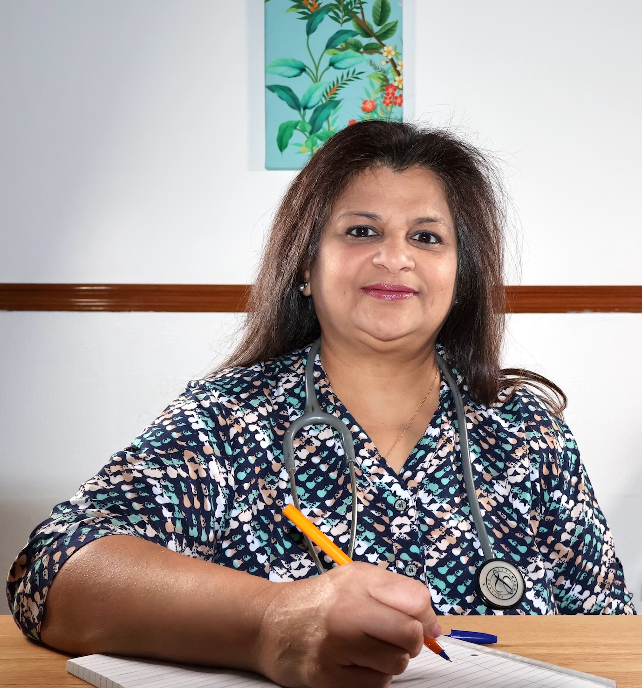

About Dr. Vaishali Ponda
B.H.M.S Homeopathy the Holistic Aproach to Healing
Dr. Vaishali Ponda has done her Bachelor in Homoeopathic Medicine (B.H.M.S.) from the prestigious C.M.P.Homoeopathic Medical University from Mumbai, India, in the year 1993. Post that she taught the subject of Homeopathy Pharmacopia at the C.M.P.H. University. Later she joined the Indian Institute of Research Centre in Homeopathy for Asthma & gained vast experience & Knowledge for a period of 3 years. Also practiced Homeopathy as a Private Consultant for a period of 3 years in Mumbai. Matrimony brought her to Nairobi, Kenya, where she has widened her Horizon in Homeopathy & private practice as a Consultant in Nairobi since 1996.
She has been trained by renowned Homeopaths such as Dr.Sankaran, Dr. Jayesh Shah, Dr. Mahesh Gandhi, Dr. Jonathan Hardy, Dr. Borker, Dr. Gajanan, Micheal Yakir, and she continues to increase her knowledge in homeopathy about new concepts and new remedies in the field.
In practice she uses various approaches to treat many illnesses. She provides Homoeopathic treatment for the whole family from children to seniors, as well as pets. She specializes in treating Asthma, Allergies, Migraines & Sinusitis, Arthritis & Backache, Hormonal issues and Women health issues, Stomach problems like Irritable Bowel, Hypertension, Kidney and Gall stones, Chronic conditions like Autoimmune disease, Skin and Hair issues.
For children she has successfully treated flu’s, common cold and cough, without having to give them antibiotics and steroids. Also helped kids with ADHD, Dyslexia and Autism.